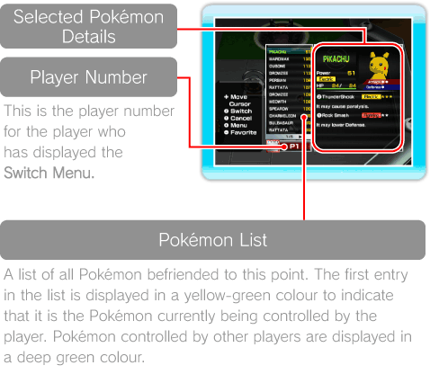
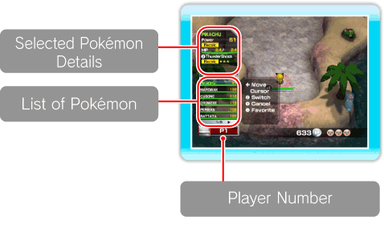
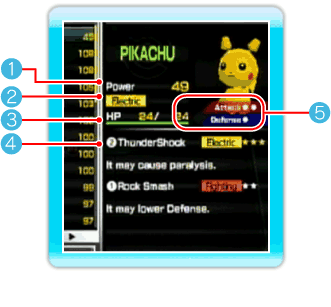
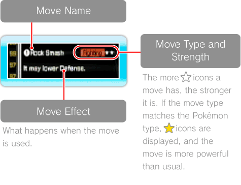
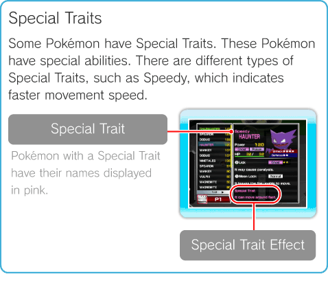
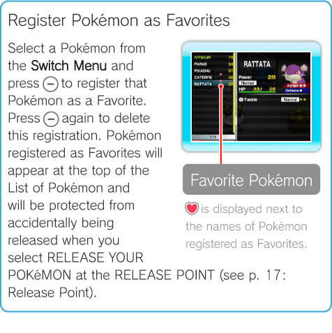

11 |
Switch Menu |
 |
|
Displaying the Switch Menu Press For information about switching Pokémon in the Terminal (see p. 12: Terminal), Stages (see p. 13: Stages), and the Battle Royale (see p. 14: Battle Royale), please see the page for each selection. Once the number of Pokémon stored in the Wii console has reached 1,000, please manage your Pokémon list by releasing your Pokémon at the RELEASE POINT (see p. 17: Release Point).
Display in the Terminal  Display in Stages and Battle Royale  Pokémon Details Display  Note: This screen variation appears in the Terminal.
Power Displays the Pokémon’s Power.
Pokémon Type Displays the Pokémon’s type, such as . There are different types of Pokémon, and some Pokémon have two types.
HP Displays the Pokémon’s current HP/maximum HP. Your Pokémon’s current HP decreases each time the Pokémon is damaged by an attack. Once the number reaches 0, the Pokémon faints, and you can no longer control it. Note: If you return to the Terminal, all of your Pokémon will automatically be healed.
Move Information Displays information about the moves this Pokémon knows. Pokémon can only learn two moves. The moves are assigned to the buttons displayed to the left of the move name ( There are some Pokémon that know only one move. If you press the button that does not have a registered move, the Pokémon will turn to face the player. In this game, Pokémon do not level up or learn moves on their own. If you want to teach your Pokémon a new move, please use the TRAINING POINT (see p. 12: Using Facilities) facility in the Terminal. 
Attack/Defense Displays the Pokémon’s Attack/Defense. The more ○ icons displayed, the higher the Attack/Defense. Note: Not displayed in Stages or Battle Royale.

Pokémon Search/Sort Pressing Note: These options are not available on the Switch Menu from Stages or the Battle Royale.
 |
 to display the Switch Menu, where you can select Pokémon to switch out, as well as view their stats and Power. The Switch Menu will display different information depending on where it is displayed.
to display the Switch Menu, where you can select Pokémon to switch out, as well as view their stats and Power. The Switch Menu will display different information depending on where it is displayed.
 and
and  ).
).
 from the Switch Menu in the Terminal will display the following three menu options.
from the Switch Menu in the Terminal will display the following three menu options.
 |
 |
 |